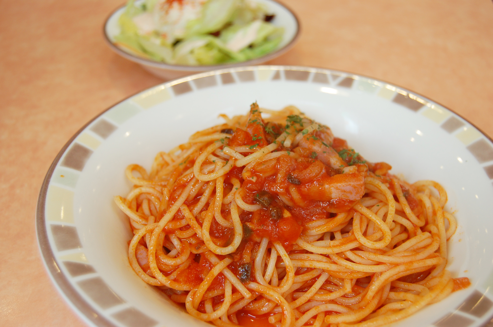

スパゲッティ
簡単!本格的な昭和のナポリタン、喫茶店にタイムスリップ!
材料(2人分～)
- バター
- 20グラム
- サラダ油
- 大さじ1
- スパゲッティ
- 2束～3束
- 玉ねぎ
- 1/2個
- ウィンナー
- 3本～
- ケチャップ
- 大さじ6～8
- 塩コショウ
- 少々
- コンソメ
- 小さじ2～
- 乾燥バジル
- 少々
作り方
-
バター20g
サラダ油大さじ1
具材を炒める1～2分 -
ケチャップを入れる
大さじ6 - 玉ねぎがしんなりしてきたら調味料を入れる
-
茹であげたパスタを入れる
水小さじ1も入れる -
追いケチャップをする
炒めて混ぜ合わせたら完成!!